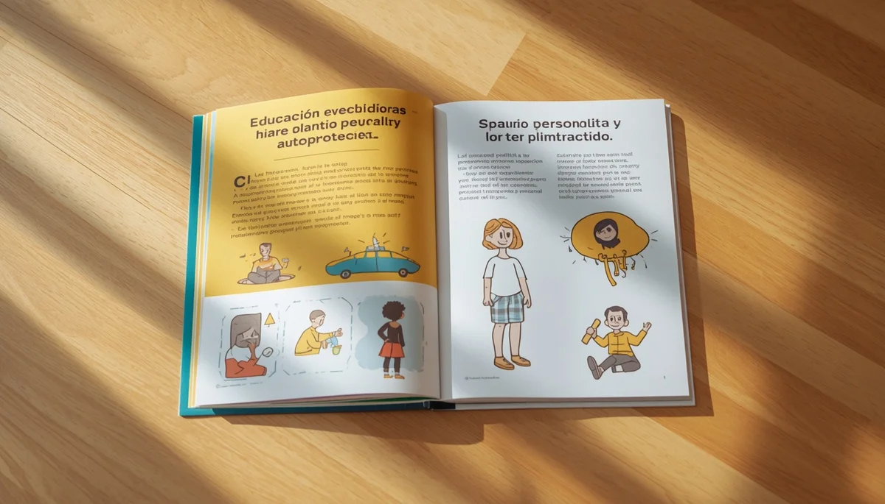

Desarrollo afectivo-sexual y comunicación familiar
Acompañar el crecimiento emocional y afectivo de la infancia desde la naturalidad, el respeto y la confianza mutua constituye uno de los pilares fundamentales de la crianza consciente. Esta guía ofrece claves prácticas y herramientas de comunicación respetuosa para abordar preguntas cotidianas, fomentar la autoestima corporal y construir un espacio seguro de diálogo en el hogar.
Fases clave en el desarrollo afectivo y sexual infantil
Cómo evoluciona la curiosidad corporal y emocional en la infancia, entendiendo cada etapa como un proceso natural de descubrimiento.
Cómo responder a las preguntas difíciles sin tabúes
Estrategias y pautas verbales para afrontar las dudas sobre el origen de la vida y el cuerpo con naturalidad y sin falsos mitos.
Respeto al propio cuerpo y consentimiento temprano
La importancia de enseñar a los menores la soberanía sobre su espacio personal, el derecho a decir 'no' y el valor de los límites.
Pautas de comunicación familiar empática y activa
Herramientas de escucha sin juicios ni descalificaciones para propiciar que los hijos compartan sus inquietudes sin miedo.
Afectividad y gestión emocional en el entorno familiar
Cómo vincular el afecto cotidiano con la seguridad emocional, ayudando a identificar y validar los sentimientos desde pequeños.
Deconstrucción de estereotipos y roles de género
Claves para educar en la libertad de elección, evitando los sesgos tradicionales que limitan la expresión afectiva y personal.

Educación preventiva y pautas de autoprotección
Estrategias claras y respetuosas para dotar a los menores de recursos frente a situaciones de riesgo y malos tratos ocultos.
Puente hacia la adolescencia: mantener el canal abierto
Cómo adaptar el diálogo familiar ante los cambios de la pubertad, afianzando la confianza para que sigan acudiendo a casa.
🧡 Continúa profundizando en la crianza y la comunicación familiar
Para complementar el desarrollo afectivo-sexual y potenciar la escucha activa en el hogar, te sugerimos explorar estos recursos:
- 🎙️ Escucha el podcast: Cómo hablar de afectividad y límites con naturalidad en casa (Ep. 14)
- 📥 Descarga el recurso práctico: Guía visual de comunicación respetuosa para familias (PDF)